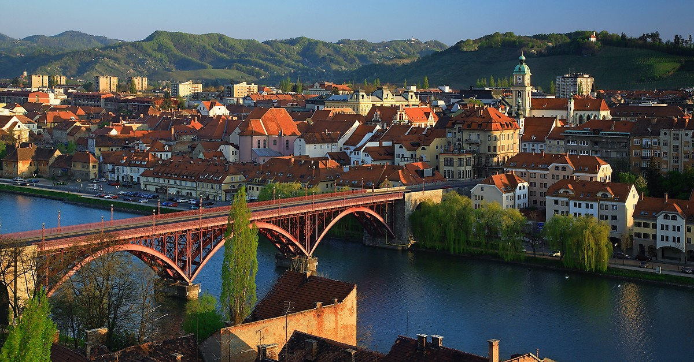

Skrbnik platforme (Admin)
Uradni profil
| Slika | Naslov in opis | Glasovi | Status (Uredi) | Akcija |
|---|---|---|---|---|
|
 |
Poplava na SmetanoviVsakič, ko malo bolj dežuje, se pri FERI-ju naredi jezero... |
42 | ||
Obupna cesta v MeljuA ste videli te luknje v Melju? Vsak dan se vozim tam... |
18 |